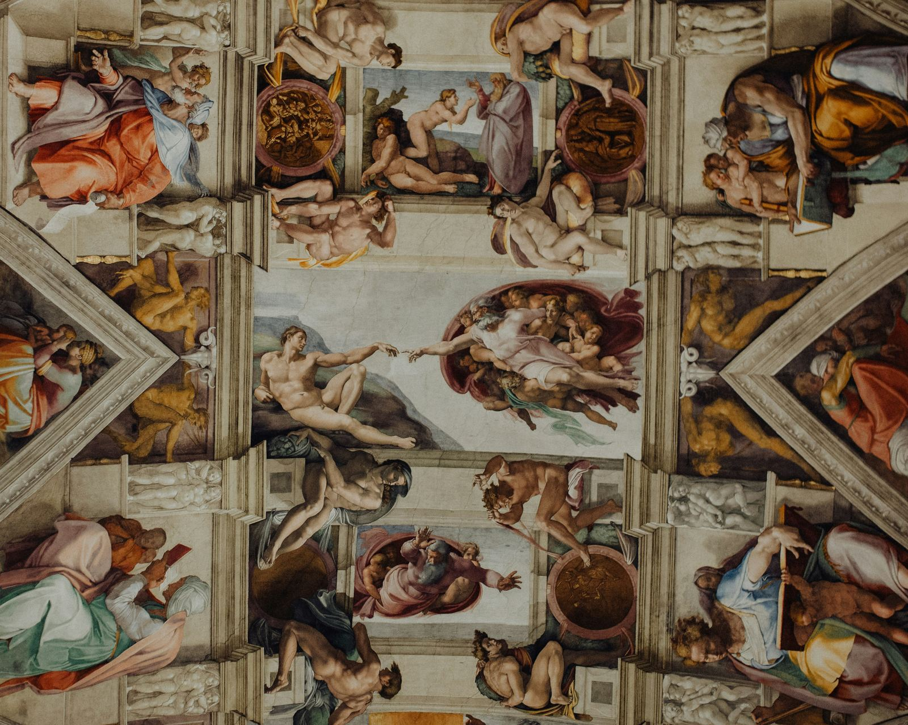

The Italian Renaissance transformed art, culture, and science, shaping the modern world.
Benvenuti a una panoramica accattivante sul Rinascimento italiano! Se siete curiosi di esplorare un'epoca che ha trasformato il panorama culturale e artistico, siete nel posto giusto.
Il Rinascimento fiorì tra la seconda metà del 1400 e la fine del 1500, segnando la fine del Medioevo e l'inizio dell'Età moderna. Questo movimento ha gettato le basi per una nuova visione del mondo, abbracciando la letteratura, l'arte e le scienze. Tutto questo affonda le radici nell'Umanesimo del 1300, un periodo che ha visto la riscoperta del mondo classico attraverso il lavoro di luminari come Francesco Petrarca.
Il Rinascimento fiorì nelle corti dei signori, dove artisti e letterati trovavano protezione e sostegno. Fu un'epoca di rinascita della cultura classica, dove gli autori antichi divennero maestri di vita e di pensiero. Questo fervore intellettuale si estese anche alla musica e alle scienze, con scoperte sorprendenti nel campo dell'astronomia e della biologia.

L'arte italiana raggiunse vette straordinarie durante il Rinascimento, con geni come Michelangelo, Raffaello e Leonardo da Vinci che dominavano la scena. La pittura e la scultura raggiunsero livelli di maestria senza precedenti, con una particolare enfasi sulla prospettiva e sulla rappresentazione della figura umana. L'architettura, inoltre, trasformò le città italiane con strade ampie, piazze imponenti e chiese maestose.
Il Rinascimento italiano è un capitolo affascinante nella storia dell'umanità, un periodo di fervore intellettuale e creativo che ha plasmato il mondo moderno.

fonte: Il Rinascimento italiano riassunto
Parole Chiave
| Rinascimento | Periodo storico in Italia tra fine 1400 e fine 1500. |
| Movimento | Cambiamento o tendenza coinvolgente. |
| Culturale | Relativo alla cultura, alle arti, alla letteratura. |
| Artistico | Relativo all'arte, alle opere d'arte. |
| Medioevo | Periodo storico europeo V-XV secolo. |
| Età moderna | Periodo storico seguente al Medioevo. |
| Umanesimo | Movimento culturale durante il Rinascimento. |
| Letteratura | Scritti creativi come poesie, romanzi. |
| Arte | Espressione creativa attraverso dipinti, sculture. |
| Scienze | Campi di studio per spiegare il mondo naturale. |
| Corti | Residenze di nobili, patroni di artisti e letterati. |
| Valori | Principi considerati importanti. |
| Amore | Sentimento di affetto o attaccamento. |
| Vita | Stato di essere vivo. |
| Architettura | Progettazione e costruzione edifici. |
| Pittore | Persona che dipinge opere d'arte. |
| Scultore | Persona che crea opere d'arte tridimensionali. |
| Geni | Persone eccezionalmente dotate. |
| Prospettiva | Modo in cui le dimensioni sono rappresentate. |
| Intellettuale | Relativo all'intelligenza o alla conoscenza. |
Esercizio
Domande
- Quando è successo il Rinascimento italiano?
- Che cosa ha promosso l'Umanesimo?
- Quali cose sono importanti nel Rinascimento?
- Quali artisti italiani famosi c'erano nel Rinascimento?
- Quali scoperte scientifiche sono state fatte durante il Rinascimento?